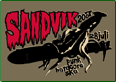

|  | Lördagen 28 juli 2007
SANDVIK 2007
Start: TBA
Inträde: GRATIS |
|
Den årliga festen på stranden arrangeras även i år i sammarbete med Kartago. Gå till hemsidan www.sandvik2007.tk för mer information om band osv.
|
|
 | Fredagen 31 augusti 2007
PUNKHART (CZ)
Fler band TBA
Insläpp: 21:00
Inträde: TBA
Medlem: TBA |
De tjeckiska skatepunkarna i Punkhart kommer till Sverige och bjuder på en helkväll tillsammans med ett flertal lokalband.
[mp3] Punkhart MySpace
|
|
 | Lördagen 22 september 2007
THE ARSON PROJECT
Fler band TBA
Insläpp: 21:00
Inträde: TBA
Medlem: TBA |
Nu kommer äntligen lite efterlängtad grindcore/death metal. Detta bjuder The Arson Project från Oskarshamn på.
[mp3] The Arson Project MySpace
|
|
 | Lördagen 24 november 2007
THE TOUR OF THE DEAD:
VOODOO GLOW SKULLS (US)
AGAINST ALL AUTHORITY (US)
LEFT ALONE (US)
Support: Splitside
Insläpp: 21:00
Inträde: TBA
Medlem: TBA |
Kanske det grymmaste punkpaketet som kommer till Sverige i år! Hetsig
och galen ska är vad som gäller när vi snackar Voodoo Glow Skulls.
Nästan det samma kan man säga om Against All Authority, dock mer
aggressiva och politiska texter. Left Alone är en av Hellcat Records
senaste förvärv och lirar Rancid och Clash influerad punk. Splitside
värmer upp publiken. Denna helkväll får absolut inte missas!
[mp3] Voodoo Glow Skulls MySpace
[mp3] Against All Authority MySpace
[mp3] Left Alone MySpace
[mp3] Splitside MySpace
|
|